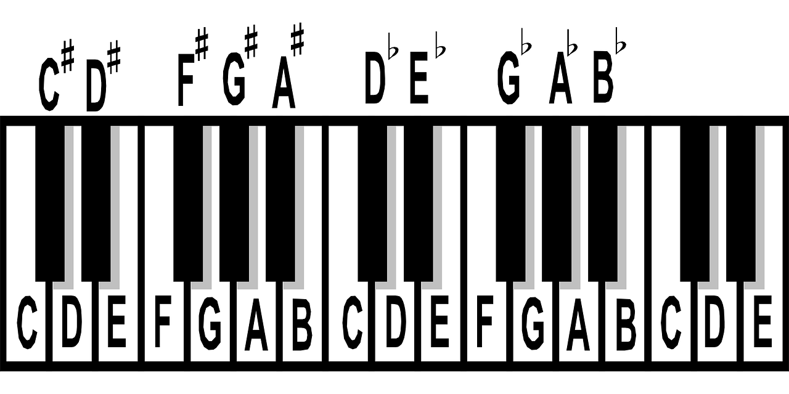

Estou aprendendo a tocar teclado, comecei um mês atrás e aqui vou compartilhar com vocês o pouco que aprendi até
agora
O que são notas musicais?
Nota musical é um termo utilizado para se referir ao elemento mínimo de um som. Ao todo, existem 12 tipos de
sons diferentes, ou seja, 12 notas. Entre essas 12 notas estão as 7 notas naturais, que são:
Dó – Ré – Mi – Fá – Sol – Lá – Si
E além das 7 notas naturais, temos mais 5 notas que são chamadas de “notas acidentadas”, sendo que, essas
notas possuem diferentes maneiras de escritas, porém apresentam o mesmo som.
As notas acidentadas são representadas por dois símbolos, um deles é o “#” que é chamado de sustenido na
música, mas que você deve conhecer como “jogo da velha” ou “hashtag“. E o segundo símbolo é a letra “b”
minuscula, que na música é chamada de bemol.
De forma básica, ao tocar as teclas do teclado sequencialmente da esquerda para a direita, teremos os
sustenidos representados nas teclas pretas, e, ao tocar de forma sequencial da direita para a esquerda,
teremos os bemóis.
Mas, não são as mesmas teclas pretas? Sim! Mas entenda, sustenido (#) é utilizado para se referenciar a tecla
preta que está à direita de uma tecla branca, enquanto o bemol (b), é utilizado para referenciar a tecla
preta que está à esquerda de uma tecla branca.
Abaixo estão representados os dois nomes ou notações utilizadas para cada uma nas notas.
Dó# – Réb (pode ser chamado de Dó sustenido ou Ré bemol)
Ré# – Mib (pode ser chamado de Ré sustenido ou Mi bemol)
Fá# – Solb (pode ser chamado de Fá sustenido ou Sol bemol)
Sol# – Láb (pode ser chamado de Sol sustenido ou Lá bemol)
Lá# – Sib (pode ser chamado de Lá sustenido ou Si bemol)
Conhecer as 12 notas é o seu primeiro passo de como tocar teclado.

Notas naturais, sutenidos e bemóis no teclado.
Autor: Ramon Tessman
Um pouco sobre o meu teclado
Adriana Cerdeira
O meu teclado, o CTK-3400SK, é um teclado de iniciante - intermediário, muito interessante com um bom custo
benefício para quem quer começar. Ele tem 61 teclas sensitivas, entrada MIDI, USB e entrada para pedal de
Sustain. Além de entrada para fone de ouvido P10 e entrada de áudio para que você possa conectar um tablet,
telefone, iPod e fazer com que uma música de acompanhamento saia junto com o que você está tocando pela
caixa de som do teclado. Segue abaixo um review do teclado, além de uma amostra de som do teclado tocado por
mim mesmo, lembre-se, no teclado eu sou iniciante!
Review Casio CTK-3400
Amostra de som
Tempos
Para quem quer aprender a tocar teclado com partituras, é muito importante entender os tempos e como eles
são designados na partitura. Segue a tabela com as figuras musicais e seus tempos.
Considerando a Semínima como 1 pulso
Figura
Nome
Pausa
Pulso
𝅝
Semibreve
𝄻
4 pulsos
𝅗𝅥
Mínima
𝄼
2 pulsos
𝅘𝅥
Semínima
𝄽
1 pulso
𝅘𝅥𝅮
Colcheia
𝄾
1/2 pulso
𝅘𝅥𝅯
Semicolcheia
𝄿
1/4 pulso
𝅘𝅥𝅰
Fusa
𝅀
1/8 pulso
𝅘𝅥𝅱
Semifusa
𝅀
1/16 pulso
Onde achar os códigos HTML para as notas musicais
Todos estes códigos que usei aqui para que aparececem as notas musicais foram tirados da página Web de
referência Alt-Codes que
é uma página
muito bacana com códigos Unicode e HTML Dec para vocês guardarem no seu repertório. E a outra, o
FontAwesome, que é uma fonte para você
usar com vários ícones.